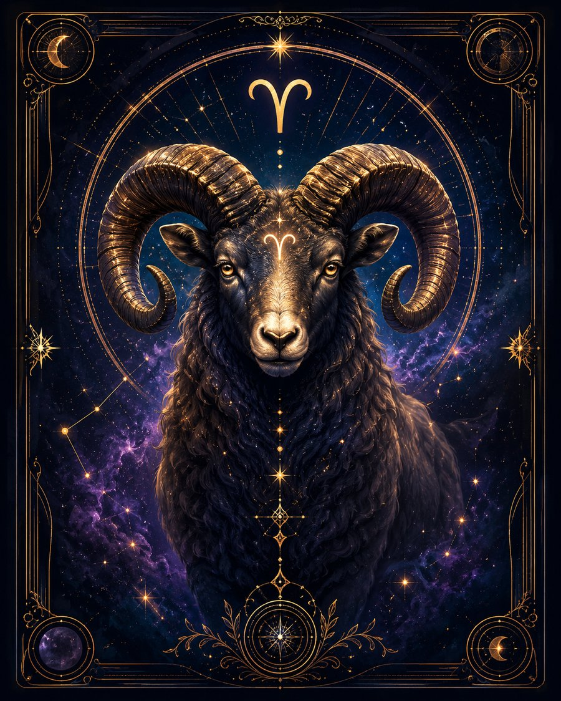

В двух словах
«Я хочу — значит, надо действовать».
Какой это человек
Овен — знак начала. Он воспринимает жизнь как пространство, в котором нужно действовать, а не бесконечно размышлять. Ему проще попробовать и ошибиться, чем месяцами готовиться. Увидел проблему — пытается решить. Увидел несправедливость — может вмешаться, даже если его никто не просил. Часто быстро загорается идеей, любит инициативу, прямоту и ощущение движения.
Что ему движет
Ощущение, что он сам выбирает направление. Ему тяжело, когда его постоянно тормозят, решают за него или заставляют жить по чужому сценарию.
Сильные стороны
Решительность, смелость, инициативность, оптимизм, способность быстро собраться в сложной ситуации, честность и умение начать с нуля после неудачи.
Слабые стороны
Нетерпение, поспешность, прямолинейность, вспыльчивость. Может начать раньше, чем понял все последствия, и потерять интерес, когда первоначальный азарт прошёл.
В отношениях
Нужны живые эмоции, интерес и ощущение движения. Овен может любить очень щедро и искренне, но плохо переносит постоянный контроль и запреты.
В работе и деньгах
Лучше раскрывается там, где нужны инициатива, самостоятельность, скорость решения, запуск новых проектов и конкуренция. Деньги чаще воспринимает как средство свободы и действия, а не как самоцель.
Когда всё плохо
Становится конфликтным и начинает бороться уже не столько за цель, сколько ради самой борьбы.
Главное внутреннее противоречие
Хочет быть независимым, но одновременно очень нуждается в признании своих действий.
Это обобщённое описание солнечного знака, а не полный портрет человека. В реальной натальной карте характер зависит не только от Солнца, но и от других факторов.